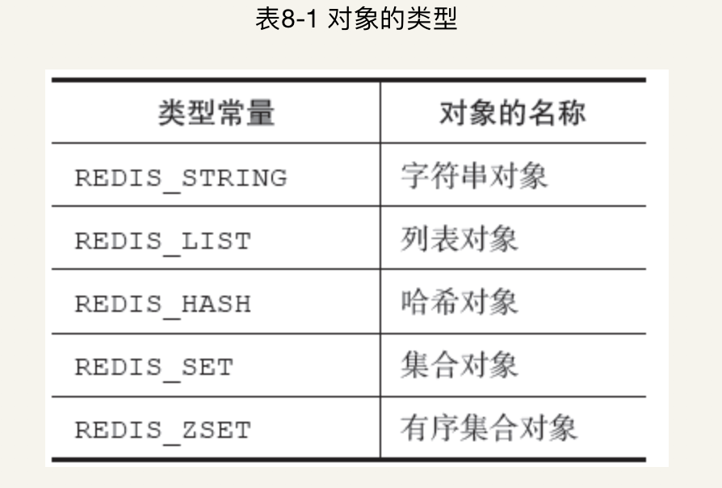
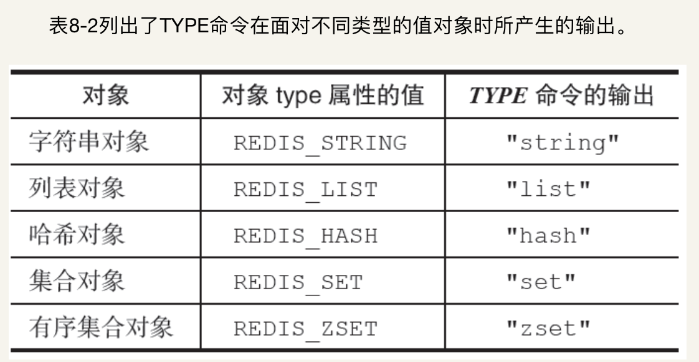
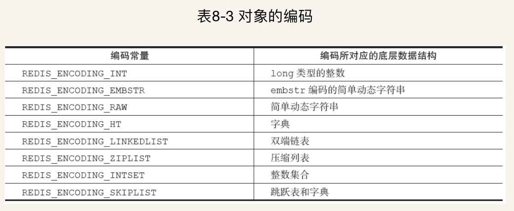
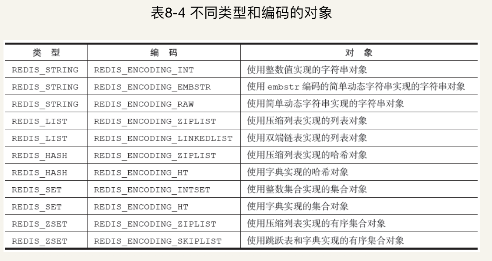
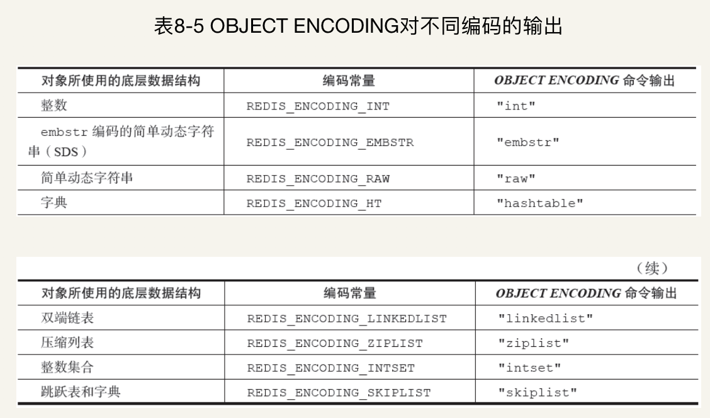

<!DOCTYPE html>
<html lang=zh>
<head><meta name="generator" content="Hexo 3.8.0">
  <meta charset="utf-8">
  
  <meta http-equiv="X-UA-Compatible" content="IE=edge,chrome=1">
  <meta name="viewport" content="width=device-width, initial-scale=1, maximum-scale=1, minimum-scale=1, user-scalable=no, minimal-ui">
  <meta name="renderer" content="webkit">
  <meta http-equiv="Cache-Control" content="no-transform">
  <meta http-equiv="Cache-Control" content="no-siteapp">
  <meta name="apple-mobile-web-app-capable" content="yes">
  <meta name="apple-mobile-web-app-status-bar-style" content="black">
  <meta name="format-detection" content="telephone=no,email=no,adress=no">
  <!-- Color theme for statusbar -->
  <meta name="theme-color" content="#000000">
  <!-- 强制页面在当前窗口以独立页面显示,防止别人在框架里调用页面 -->
  <meta http-equiv="window-target" content="_top">
  
  
  <title>Redis之对象 | 赵波的技术博客</title>
  <meta name="description" content="在前面的数个章节里，我们陆续介绍了Redis用到的所有主要数据结构，比如简单动态字符串（SDS）、双端链表、字典、压缩列表、整数集合等等。 Redis并没有直接使用这些数据结构来实现键值对数据库，而是基于这些数据结构创建了一个对象系统，这个系统包含字符串对象、列表对象、哈希对象、集合对象和有序集合对象这五种类型的对象，每种对象都用到了至少一种我们前面所介绍的数据结构。 通过这五种不同类型的对象，R">
<meta name="keywords" content="redis">
<meta property="og:type" content="article">
<meta property="og:title" content="Redis之对象">
<meta property="og:url" content="http://blog.shagle.cn/2019/03/07/Redis之对象/index.html">
<meta property="og:site_name" content="个人博客">
<meta property="og:description" content="在前面的数个章节里，我们陆续介绍了Redis用到的所有主要数据结构，比如简单动态字符串（SDS）、双端链表、字典、压缩列表、整数集合等等。 Redis并没有直接使用这些数据结构来实现键值对数据库，而是基于这些数据结构创建了一个对象系统，这个系统包含字符串对象、列表对象、哈希对象、集合对象和有序集合对象这五种类型的对象，每种对象都用到了至少一种我们前面所介绍的数据结构。 通过这五种不同类型的对象，R">
<meta property="og:locale" content="zh-CN">
<meta property="og:image" content="http://blog.shagle.cn/2019/03/07/Redis之对象/20190307173736.png">
<meta property="og:image" content="http://blog.shagle.cn/2019/03/07/Redis之对象/20190307174110.png">
<meta property="og:image" content="http://blog.shagle.cn/2019/03/07/Redis之对象/20190307174221.png">
<meta property="og:image" content="http://blog.shagle.cn/2019/03/07/Redis之对象/20190307174256.png">
<meta property="og:image" content="http://blog.shagle.cn/2019/03/07/Redis之对象/20190307174357.png">
<meta property="og:updated_time" content="2019-03-07T09:45:08.000Z">
<meta name="twitter:card" content="summary">
<meta name="twitter:title" content="Redis之对象">
<meta name="twitter:description" content="在前面的数个章节里，我们陆续介绍了Redis用到的所有主要数据结构，比如简单动态字符串（SDS）、双端链表、字典、压缩列表、整数集合等等。 Redis并没有直接使用这些数据结构来实现键值对数据库，而是基于这些数据结构创建了一个对象系统，这个系统包含字符串对象、列表对象、哈希对象、集合对象和有序集合对象这五种类型的对象，每种对象都用到了至少一种我们前面所介绍的数据结构。 通过这五种不同类型的对象，R">
<meta name="twitter:image" content="http://blog.shagle.cn/2019/03/07/Redis之对象/20190307173736.png">
  <!-- Canonical links -->
  <link rel="canonical" href="http://blog.shagle.cn/2019/03/07/Redis之对象/index.html">
  
    <link rel="alternate" href="/atom.xml" title="个人博客" type="application/atom+xml">
  
  
    <link rel="icon" href="/favicon.png" type="image/x-icon">
  
  <link rel="stylesheet" href="/css/style.css">
  
  
  
  
</head>


<body class="main-center theme-purple" itemscope itemtype="http://schema.org/WebPage">
  <header class="header" itemscope="" itemtype="http://schema.org/WPHeader">
  <div class="slimContent">
    <div class="navbar-header">
      
      
      <div class="profile-block text-center">
        <a id="avatar" href="/" target="_blank">
          
        </a>
        <h2 id="name" class="hidden-xs hidden-sm">波哥</h2>
        <h3 id="title" class="hidden-xs hidden-sm hidden-md">Java Developer &amp; Designer</h3>
        <small id="location" class="text-muted hidden-xs hidden-sm"><i class="icon icon-map-marker"></i> ChengDu, China</small>
      </div>
      
      <div class="search" id="search-form-wrap">

    <form class="search-form sidebar-form">
        <div class="input-group">
            <input type="text" class="search-form-input form-control" placeholder="搜索">
            <span class="input-group-btn">
                <button type="submit" class="search-form-submit btn btn-flat" onclick="return false;"><i class="icon icon-search"></i></button>
            </span>
        </div>
    </form>
    <div class="ins-search">
  <div class="ins-search-mask"></div>
  <div class="ins-search-container">
    <div class="ins-input-wrapper">
      <input type="text" class="ins-search-input" placeholder="想要查找什么..." x-webkit-speech="">
      <button type="button" class="close ins-close ins-selectable" data-dismiss="modal" aria-label="Close"><span aria-hidden="true">×</span></button>
    </div>
    <div class="ins-section-wrapper">
      <div class="ins-section-container"></div>
    </div>
  </div>
</div>


</div>
      <button class="navbar-toggle collapsed" type="button" data-toggle="collapse" data-target="#main-navbar" aria-controls="main-navbar" aria-expanded="false">
        <span class="sr-only">Toggle navigation</span>
        <span class="icon-bar"></span>
        <span class="icon-bar"></span>
        <span class="icon-bar"></span>
      </button>
    </div>
    <nav id="main-navbar" class="collapse navbar-collapse" itemscope="" itemtype="http://schema.org/SiteNavigationElement" role="navigation">
      <ul class="nav navbar-nav main-nav ">
        
        
        <li class="menu-item menu-item-home">
          <a href="/.">
            
            <i class="icon icon-home-fill"></i>
            
            <span class="menu-title">首页</span>
          </a>
        </li>
        
        
        <li class="menu-item menu-item-archives">
          <a href="/archives">
            
            <i class="icon icon-archives-fill"></i>
            
            <span class="menu-title">归档</span>
          </a>
        </li>
        
        
        <li class="menu-item menu-item-categories">
          <a href="/categories">
            
            <i class="icon icon-folder"></i>
            
            <span class="menu-title">分类</span>
          </a>
        </li>
        
        
        <li class="menu-item menu-item-tags">
          <a href="/tags">
            
            <i class="icon icon-tags"></i>
            
            <span class="menu-title">标签</span>
          </a>
        </li>
        
        
        <li class="menu-item menu-item-repository">
          <a href="/repository">
            
            <i class="icon icon-project"></i>
            
            <span class="menu-title">项目</span>
          </a>
        </li>
        
        
        <li class="menu-item menu-item-books">
          <a href="/books">
            
            <i class="icon icon-book-fill"></i>
            
            <span class="menu-title">书单</span>
          </a>
        </li>
        
        
        <li class="menu-item menu-item-links">
          <a href="/links">
            
            <i class="icon icon-friendship"></i>
            
            <span class="menu-title">友链</span>
          </a>
        </li>
        
        
        <li class="menu-item menu-item-about">
          <a href="/about">
            
            <i class="icon icon-cup-fill"></i>
            
            <span class="menu-title">关于</span>
          </a>
        </li>
        
      </ul>
      
	
    <ul class="social-links">
    	
        <li><a href="https://github.com/bogle-zhao" target="_blank" title="Github" data-toggle="tooltip" data-placement="top"><i class="icon icon-github"></i></a></li>
        
        <li><a href="http://weibo.com/bogle-zhao" target="_blank" title="Weibo" data-toggle="tooltip" data-placement="top"><i class="icon icon-weibo"></i></a></li>
        
        <li><a href="https://twitter.com/iwebued" target="_blank" title="Twitter" data-toggle="tooltip" data-placement="top"><i class="icon icon-twitter"></i></a></li>
        
        <li><a href="https://www.behance.net/cofess" target="_blank" title="Behance" data-toggle="tooltip" data-placement="top"><i class="icon icon-behance"></i></a></li>
        
        <li><a href="/atom.xml" target="_blank" title="Rss" data-toggle="tooltip" data-placement="top"><i class="icon icon-rss"></i></a></li>
        
    </ul>

    </nav>
  </div>
</header>

  
    <aside class="sidebar" itemscope="" itemtype="http://schema.org/WPSideBar">
  <div class="slimContent">
    
      <div class="widget">
    <h3 class="widget-title">公告</h3>
    <div class="widget-body">
        <div id="board">
            <div class="content">
                <p>欢迎交流与分享经验!</p>
            </div>
        </div>
    </div>
</div>

    
      
  <div class="widget">
    <h3 class="widget-title">分类</h3>
    <div class="widget-body">
      <ul class="category-list"><li class="category-list-item"><a class="category-list-link" href="/categories/HttpClient/">HttpClient</a><span class="category-list-count">3</span></li><li class="category-list-item"><a class="category-list-link" href="/categories/I-O/">I/O</a><span class="category-list-count">2</span></li><li class="category-list-item"><a class="category-list-link" href="/categories/Java8/">Java8</a><span class="category-list-count">1</span></li><li class="category-list-item"><a class="category-list-link" href="/categories/Java并发/">Java并发</a><span class="category-list-count">1</span></li><li class="category-list-item"><a class="category-list-link" href="/categories/Java技术/">Java技术</a><span class="category-list-count">25</span><ul class="category-list-child"><li class="category-list-item"><a class="category-list-link" href="/categories/Java技术/多线程/">多线程</a><span class="category-list-count">1</span></li></ul></li><li class="category-list-item"><a class="category-list-link" href="/categories/MQ/">MQ</a><span class="category-list-count">1</span></li><li class="category-list-item"><a class="category-list-link" href="/categories/NoSql/">NoSql</a><span class="category-list-count">5</span></li><li class="category-list-item"><a class="category-list-link" href="/categories/Protocol-buffer/">Protocol buffer</a><span class="category-list-count">1</span></li><li class="category-list-item"><a class="category-list-link" href="/categories/Spring/">Spring</a><span class="category-list-count">4</span></li><li class="category-list-item"><a class="category-list-link" href="/categories/Spring-MVC/">Spring MVC</a><span class="category-list-count">1</span></li><li class="category-list-item"><a class="category-list-link" href="/categories/Spring源码深度解析/">Spring源码深度解析</a><span class="category-list-count">1</span><ul class="category-list-child"><li class="category-list-item"><a class="category-list-link" href="/categories/Spring源码深度解析/Spring/">Spring</a><span class="category-list-count">1</span></li></ul></li><li class="category-list-item"><a class="category-list-link" href="/categories/ribbon/">ribbon</a><span class="category-list-count">2</span></li><li class="category-list-item"><a class="category-list-link" href="/categories/rpc/">rpc</a><span class="category-list-count">2</span></li><li class="category-list-item"><a class="category-list-link" href="/categories/security/">security</a><span class="category-list-count">1</span></li><li class="category-list-item"><a class="category-list-link" href="/categories/servlet/">servlet</a><span class="category-list-count">1</span></li><li class="category-list-item"><a class="category-list-link" href="/categories/servlet3-0/">servlet3.0</a><span class="category-list-count">1</span><ul class="category-list-child"><li class="category-list-item"><a class="category-list-link" href="/categories/servlet3-0/spring-mvc/">spring mvc</a><span class="category-list-count">1</span></li></ul></li><li class="category-list-item"><a class="category-list-link" href="/categories/spring/">spring</a><span class="category-list-count">32</span></li><li class="category-list-item"><a class="category-list-link" href="/categories/分布式/">分布式</a><span class="category-list-count">3</span><ul class="category-list-child"><li class="category-list-item"><a class="category-list-link" href="/categories/分布式/Zookeeper/">Zookeeper</a><span class="category-list-count">1</span></li></ul></li><li class="category-list-item"><a class="category-list-link" href="/categories/工具/">工具</a><span class="category-list-count">1</span></li><li class="category-list-item"><a class="category-list-link" href="/categories/算法/">算法</a><span class="category-list-count">8</span></li><li class="category-list-item"><a class="category-list-link" href="/categories/编程术语/">编程术语</a><span class="category-list-count">2</span></li><li class="category-list-item"><a class="category-list-link" href="/categories/设计模式/">设计模式</a><span class="category-list-count">1</span></li></ul>
    </div>
  </div>


    
      
  <div class="widget">
    <h3 class="widget-title">标签</h3>
    <div class="widget-body">
      <ul class="tag-list"><li class="tag-list-item"><a class="tag-list-link" href="/tags/AES/">AES</a><span class="tag-list-count">1</span></li><li class="tag-list-item"><a class="tag-list-link" href="/tags/AOP/">AOP</a><span class="tag-list-count">1</span></li><li class="tag-list-item"><a class="tag-list-link" href="/tags/AQS/">AQS</a><span class="tag-list-count">1</span></li><li class="tag-list-item"><a class="tag-list-link" href="/tags/ApplicationEvent/">ApplicationEvent</a><span class="tag-list-count">1</span></li><li class="tag-list-item"><a class="tag-list-link" href="/tags/ArrayList/">ArrayList</a><span class="tag-list-count">1</span></li><li class="tag-list-item"><a class="tag-list-link" href="/tags/BOP/">BOP</a><span class="tag-list-count">1</span></li><li class="tag-list-item"><a class="tag-list-link" href="/tags/Bean/">Bean</a><span class="tag-list-count">1</span></li><li class="tag-list-item"><a class="tag-list-link" href="/tags/BeanDefinitionReader/">BeanDefinitionReader</a><span class="tag-list-count">1</span></li><li class="tag-list-item"><a class="tag-list-link" href="/tags/BeanFactoryPostProcessor/">BeanFactoryPostProcessor</a><span class="tag-list-count">1</span></li><li class="tag-list-item"><a class="tag-list-link" href="/tags/BeanPostProcessor/">BeanPostProcessor</a><span class="tag-list-count">1</span></li><li class="tag-list-item"><a class="tag-list-link" href="/tags/Callable/">Callable</a><span class="tag-list-count">1</span></li><li class="tag-list-item"><a class="tag-list-link" href="/tags/ComponentScan/">ComponentScan</a><span class="tag-list-count">1</span></li><li class="tag-list-item"><a class="tag-list-link" href="/tags/Conditional/">Conditional</a><span class="tag-list-count">1</span></li><li class="tag-list-item"><a class="tag-list-link" href="/tags/DES/">DES</a><span class="tag-list-count">1</span></li><li class="tag-list-item"><a class="tag-list-link" href="/tags/DI-DL/">DI/DL</a><span class="tag-list-count">1</span></li><li class="tag-list-item"><a class="tag-list-link" href="/tags/FactoryBean/">FactoryBean</a><span class="tag-list-count">1</span></li><li class="tag-list-item"><a class="tag-list-link" href="/tags/Future/">Future</a><span class="tag-list-count">1</span></li><li class="tag-list-item"><a class="tag-list-link" href="/tags/FutureTask/">FutureTask</a><span class="tag-list-count">2</span></li><li class="tag-list-item"><a class="tag-list-link" href="/tags/Hash/">Hash</a><span class="tag-list-count">2</span></li><li class="tag-list-item"><a class="tag-list-link" href="/tags/HttpURLConnection/">HttpURLConnection</a><span class="tag-list-count">1</span></li><li class="tag-list-item"><a class="tag-list-link" href="/tags/I-O多路复用/">I/O多路复用</a><span class="tag-list-count">1</span></li><li class="tag-list-item"><a class="tag-list-link" href="/tags/IOC/">IOC</a><span class="tag-list-count">2</span></li><li class="tag-list-item"><a class="tag-list-link" href="/tags/InputStream/">InputStream</a><span class="tag-list-count">1</span></li><li class="tag-list-item"><a class="tag-list-link" href="/tags/Java/">Java</a><span class="tag-list-count">3</span></li><li class="tag-list-item"><a class="tag-list-link" href="/tags/LRU/">LRU</a><span class="tag-list-count">1</span></li><li class="tag-list-item"><a class="tag-list-link" href="/tags/Lazy-bean注解/">Lazy-bean注解</a><span class="tag-list-count">1</span></li><li class="tag-list-item"><a class="tag-list-link" href="/tags/LinkedList/">LinkedList</a><span class="tag-list-count">1</span></li><li class="tag-list-item"><a class="tag-list-link" href="/tags/LockSupport/">LockSupport</a><span class="tag-list-count">1</span></li><li class="tag-list-item"><a class="tag-list-link" href="/tags/MD5withRSA/">MD5withRSA</a><span class="tag-list-count">1</span></li><li class="tag-list-item"><a class="tag-list-link" href="/tags/MD5加密/">MD5加密</a><span class="tag-list-count">1</span></li><li class="tag-list-item"><a class="tag-list-link" href="/tags/O-1/">O(1)</a><span class="tag-list-count">1</span></li><li class="tag-list-item"><a class="tag-list-link" href="/tags/O-log-n/">O(log n)</a><span class="tag-list-count">1</span></li><li class="tag-list-item"><a class="tag-list-link" href="/tags/O-n/">O(n)</a><span class="tag-list-count">1</span></li><li class="tag-list-item"><a class="tag-list-link" href="/tags/OOP/">OOP</a><span class="tag-list-count">1</span></li><li class="tag-list-item"><a class="tag-list-link" href="/tags/PropertyPlaceholderConfigurer/">PropertyPlaceholderConfigurer</a><span class="tag-list-count">1</span></li><li class="tag-list-item"><a class="tag-list-link" href="/tags/PropertySource，Environment，Profile/">PropertySource，Environment，Profile</a><span class="tag-list-count">1</span></li><li class="tag-list-item"><a class="tag-list-link" href="/tags/ReentrantLock/">ReentrantLock</a><span class="tag-list-count">1</span></li><li class="tag-list-item"><a class="tag-list-link" href="/tags/ReentrantReadWriteLock/">ReentrantReadWriteLock</a><span class="tag-list-count">2</span></li><li class="tag-list-item"><a class="tag-list-link" href="/tags/Resource/">Resource</a><span class="tag-list-count">1</span></li><li class="tag-list-item"><a class="tag-list-link" href="/tags/ResourceBundle/">ResourceBundle</a><span class="tag-list-count">1</span></li><li class="tag-list-item"><a class="tag-list-link" href="/tags/ResourceLoader/">ResourceLoader</a><span class="tag-list-count">1</span></li><li class="tag-list-item"><a class="tag-list-link" href="/tags/Resource接口/">Resource接口</a><span class="tag-list-count">1</span></li><li class="tag-list-item"><a class="tag-list-link" href="/tags/Semaphore/">Semaphore</a><span class="tag-list-count">1</span></li><li class="tag-list-item"><a class="tag-list-link" href="/tags/Sentinel/">Sentinel</a><span class="tag-list-count">1</span></li><li class="tag-list-item"><a class="tag-list-link" href="/tags/Sharding-jdbc/">Sharding-jdbc</a><span class="tag-list-count">1</span></li><li class="tag-list-item"><a class="tag-list-link" href="/tags/ShardingSphere/">ShardingSphere</a><span class="tag-list-count">1</span></li><li class="tag-list-item"><a class="tag-list-link" href="/tags/SkipList跳表/">SkipList跳表</a><span class="tag-list-count">1</span></li><li class="tag-list-item"><a class="tag-list-link" href="/tags/Spring/">Spring</a><span class="tag-list-count">6</span></li><li class="tag-list-item"><a class="tag-list-link" href="/tags/Spring-事件机制/">Spring 事件机制</a><span class="tag-list-count">1</span></li><li class="tag-list-item"><a class="tag-list-link" href="/tags/System-arrayCopy/">System.arrayCopy</a><span class="tag-list-count">1</span></li><li class="tag-list-item"><a class="tag-list-link" href="/tags/ThreadLocal/">ThreadLocal</a><span class="tag-list-count">1</span></li><li class="tag-list-item"><a class="tag-list-link" href="/tags/Zookeeper/">Zookeeper</a><span class="tag-list-count">1</span></li><li class="tag-list-item"><a class="tag-list-link" href="/tags/annotation/">annotation</a><span class="tag-list-count">1</span></li><li class="tag-list-item"><a class="tag-list-link" href="/tags/aop/">aop</a><span class="tag-list-count">1</span></li><li class="tag-list-item"><a class="tag-list-link" href="/tags/available/">available</a><span class="tag-list-count">1</span></li><li class="tag-list-item"><a class="tag-list-link" href="/tags/cpu/">cpu</a><span class="tag-list-count">1</span></li><li class="tag-list-item"><a class="tag-list-link" href="/tags/feign/">feign</a><span class="tag-list-count">2</span></li><li class="tag-list-item"><a class="tag-list-link" href="/tags/getEnv/">getEnv</a><span class="tag-list-count">1</span></li><li class="tag-list-item"><a class="tag-list-link" href="/tags/grpc/">grpc</a><span class="tag-list-count">1</span></li><li class="tag-list-item"><a class="tag-list-link" href="/tags/idea/">idea</a><span class="tag-list-count">1</span></li><li class="tag-list-item"><a class="tag-list-link" href="/tags/ignoreDependencyInterface/">ignoreDependencyInterface</a><span class="tag-list-count">1</span></li><li class="tag-list-item"><a class="tag-list-link" href="/tags/interrupt/">interrupt</a><span class="tag-list-count">1</span></li><li class="tag-list-item"><a class="tag-list-link" href="/tags/interrupted/">interrupted</a><span class="tag-list-count">1</span></li><li class="tag-list-item"><a class="tag-list-link" href="/tags/isInterrupted/">isInterrupted</a><span class="tag-list-count">1</span></li><li class="tag-list-item"><a class="tag-list-link" href="/tags/java8/">java8</a><span class="tag-list-count">1</span></li><li class="tag-list-item"><a class="tag-list-link" href="/tags/javabean/">javabean</a><span class="tag-list-count">1</span></li><li class="tag-list-item"><a class="tag-list-link" href="/tags/join/">join</a><span class="tag-list-count">1</span></li><li class="tag-list-item"><a class="tag-list-link" href="/tags/jvm/">jvm</a><span class="tag-list-count">1</span></li><li class="tag-list-item"><a class="tag-list-link" href="/tags/kafka/">kafka</a><span class="tag-list-count">1</span></li><li class="tag-list-item"><a class="tag-list-link" href="/tags/pojo/">pojo</a><span class="tag-list-count">1</span></li><li class="tag-list-item"><a class="tag-list-link" href="/tags/redis/">redis</a><span class="tag-list-count">5</span></li><li class="tag-list-item"><a class="tag-list-link" href="/tags/ribbon/">ribbon</a><span class="tag-list-count">2</span></li><li class="tag-list-item"><a class="tag-list-link" href="/tags/rpc/">rpc</a><span class="tag-list-count">1</span></li><li class="tag-list-item"><a class="tag-list-link" href="/tags/servlet3-0/">servlet3.0</a><span class="tag-list-count">2</span></li><li class="tag-list-item"><a class="tag-list-link" href="/tags/sha1加密/">sha1加密</a><span class="tag-list-count">1</span></li><li class="tag-list-item"><a class="tag-list-link" href="/tags/spirng-Profile/">spirng Profile</a><span class="tag-list-count">1</span></li><li class="tag-list-item"><a class="tag-list-link" href="/tags/spring/">spring</a><span class="tag-list-count">2</span></li><li class="tag-list-item"><a class="tag-list-link" href="/tags/spring-Autowired/">spring Autowired</a><span class="tag-list-count">1</span></li><li class="tag-list-item"><a class="tag-list-link" href="/tags/spring-Aware/">spring Aware</a><span class="tag-list-count">1</span></li><li class="tag-list-item"><a class="tag-list-link" href="/tags/spring-Configuration注解/">spring Configuration注解</a><span class="tag-list-count">1</span></li><li class="tag-list-item"><a class="tag-list-link" href="/tags/spring-Import注解/">spring Import注解</a><span class="tag-list-count">1</span></li><li class="tag-list-item"><a class="tag-list-link" href="/tags/spring-Primary/">spring Primary</a><span class="tag-list-count">1</span></li><li class="tag-list-item"><a class="tag-list-link" href="/tags/spring-PropertySource原理/">spring PropertySource原理</a><span class="tag-list-count">1</span></li><li class="tag-list-item"><a class="tag-list-link" href="/tags/spring-PropertySource注解/">spring PropertySource注解</a><span class="tag-list-count">1</span></li><li class="tag-list-item"><a class="tag-list-link" href="/tags/spring-Qualifier/">spring Qualifier</a><span class="tag-list-count">1</span></li><li class="tag-list-item"><a class="tag-list-link" href="/tags/spring-Scope注解/">spring Scope注解</a><span class="tag-list-count">1</span></li><li class="tag-list-item"><a class="tag-list-link" href="/tags/spring-mvc/">spring mvc</a><span class="tag-list-count">1</span></li><li class="tag-list-item"><a class="tag-list-link" href="/tags/spring-value注解/">spring value注解</a><span class="tag-list-count">1</span></li><li class="tag-list-item"><a class="tag-list-link" href="/tags/spring-导图/">spring 导图</a><span class="tag-list-count">1</span></li><li class="tag-list-item"><a class="tag-list-link" href="/tags/spring-生命周期/">spring-生命周期</a><span class="tag-list-count">1</span></li><li class="tag-list-item"><a class="tag-list-link" href="/tags/threadLocal/">threadLocal</a><span class="tag-list-count">1</span></li><li class="tag-list-item"><a class="tag-list-link" href="/tags/volatile/">volatile</a><span class="tag-list-count">1</span></li><li class="tag-list-item"><a class="tag-list-link" href="/tags/位运算/">位运算</a><span class="tag-list-count">1</span></li><li class="tag-list-item"><a class="tag-list-link" href="/tags/公钥和私钥/">公钥和私钥</a><span class="tag-list-count">1</span></li><li class="tag-list-item"><a class="tag-list-link" href="/tags/分布式锁/">分布式锁</a><span class="tag-list-count">1</span></li><li class="tag-list-item"><a class="tag-list-link" href="/tags/占位符解析器/">占位符解析器</a><span class="tag-list-count">1</span></li><li class="tag-list-item"><a class="tag-list-link" href="/tags/国际化/">国际化</a><span class="tag-list-count">2</span></li><li class="tag-list-item"><a class="tag-list-link" href="/tags/异步controller/">异步controller</a><span class="tag-list-count">1</span></li><li class="tag-list-item"><a class="tag-list-link" href="/tags/强引用、软引用、弱引用、虚引用/">强引用、软引用、弱引用、虚引用</a><span class="tag-list-count">1</span></li><li class="tag-list-item"><a class="tag-list-link" href="/tags/熔断/">熔断</a><span class="tag-list-count">1</span></li><li class="tag-list-item"><a class="tag-list-link" href="/tags/线程池/">线程池</a><span class="tag-list-count">1</span></li><li class="tag-list-item"><a class="tag-list-link" href="/tags/线程通信/">线程通信</a><span class="tag-list-count">1</span></li><li class="tag-list-item"><a class="tag-list-link" href="/tags/设计模式/">设计模式</a><span class="tag-list-count">1</span></li><li class="tag-list-item"><a class="tag-list-link" href="/tags/设计模式六大原则/">设计模式六大原则</a><span class="tag-list-count">1</span></li><li class="tag-list-item"><a class="tag-list-link" href="/tags/进制转换/">进制转换</a><span class="tag-list-count">1</span></li></ul>
    </div>
  </div>


    
      
  <div class="widget">
    <h3 class="widget-title">标签云</h3>
    <div class="widget-body tagcloud">
      <a href="/tags/AES/" style="font-size: 13px;">AES</a> <a href="/tags/AOP/" style="font-size: 13px;">AOP</a> <a href="/tags/AQS/" style="font-size: 13px;">AQS</a> <a href="/tags/ApplicationEvent/" style="font-size: 13px;">ApplicationEvent</a> <a href="/tags/ArrayList/" style="font-size: 13px;">ArrayList</a> <a href="/tags/BOP/" style="font-size: 13px;">BOP</a> <a href="/tags/Bean/" style="font-size: 13px;">Bean</a> <a href="/tags/BeanDefinitionReader/" style="font-size: 13px;">BeanDefinitionReader</a> <a href="/tags/BeanFactoryPostProcessor/" style="font-size: 13px;">BeanFactoryPostProcessor</a> <a href="/tags/BeanPostProcessor/" style="font-size: 13px;">BeanPostProcessor</a> <a href="/tags/Callable/" style="font-size: 13px;">Callable</a> <a href="/tags/ComponentScan/" style="font-size: 13px;">ComponentScan</a> <a href="/tags/Conditional/" style="font-size: 13px;">Conditional</a> <a href="/tags/DES/" style="font-size: 13px;">DES</a> <a href="/tags/DI-DL/" style="font-size: 13px;">DI/DL</a> <a href="/tags/FactoryBean/" style="font-size: 13px;">FactoryBean</a> <a href="/tags/Future/" style="font-size: 13px;">Future</a> <a href="/tags/FutureTask/" style="font-size: 13.25px;">FutureTask</a> <a href="/tags/Hash/" style="font-size: 13.25px;">Hash</a> <a href="/tags/HttpURLConnection/" style="font-size: 13px;">HttpURLConnection</a> <a href="/tags/I-O多路复用/" style="font-size: 13px;">I/O多路复用</a> <a href="/tags/IOC/" style="font-size: 13.25px;">IOC</a> <a href="/tags/InputStream/" style="font-size: 13px;">InputStream</a> <a href="/tags/Java/" style="font-size: 13.5px;">Java</a> <a href="/tags/LRU/" style="font-size: 13px;">LRU</a> <a href="/tags/Lazy-bean注解/" style="font-size: 13px;">Lazy-bean注解</a> <a href="/tags/LinkedList/" style="font-size: 13px;">LinkedList</a> <a href="/tags/LockSupport/" style="font-size: 13px;">LockSupport</a> <a href="/tags/MD5withRSA/" style="font-size: 13px;">MD5withRSA</a> <a href="/tags/MD5加密/" style="font-size: 13px;">MD5加密</a> <a href="/tags/O-1/" style="font-size: 13px;">O(1)</a> <a href="/tags/O-log-n/" style="font-size: 13px;">O(log n)</a> <a href="/tags/O-n/" style="font-size: 13px;">O(n)</a> <a href="/tags/OOP/" style="font-size: 13px;">OOP</a> <a href="/tags/PropertyPlaceholderConfigurer/" style="font-size: 13px;">PropertyPlaceholderConfigurer</a> <a href="/tags/PropertySource，Environment，Profile/" style="font-size: 13px;">PropertySource，Environment，Profile</a> <a href="/tags/ReentrantLock/" style="font-size: 13px;">ReentrantLock</a> <a href="/tags/ReentrantReadWriteLock/" style="font-size: 13.25px;">ReentrantReadWriteLock</a> <a href="/tags/Resource/" style="font-size: 13px;">Resource</a> <a href="/tags/ResourceBundle/" style="font-size: 13px;">ResourceBundle</a> <a href="/tags/ResourceLoader/" style="font-size: 13px;">ResourceLoader</a> <a href="/tags/Resource接口/" style="font-size: 13px;">Resource接口</a> <a href="/tags/Semaphore/" style="font-size: 13px;">Semaphore</a> <a href="/tags/Sentinel/" style="font-size: 13px;">Sentinel</a> <a href="/tags/Sharding-jdbc/" style="font-size: 13px;">Sharding-jdbc</a> <a href="/tags/ShardingSphere/" style="font-size: 13px;">ShardingSphere</a> <a href="/tags/SkipList跳表/" style="font-size: 13px;">SkipList跳表</a> <a href="/tags/Spring/" style="font-size: 14px;">Spring</a> <a href="/tags/Spring-事件机制/" style="font-size: 13px;">Spring 事件机制</a> <a href="/tags/System-arrayCopy/" style="font-size: 13px;">System.arrayCopy</a> <a href="/tags/ThreadLocal/" style="font-size: 13px;">ThreadLocal</a> <a href="/tags/Zookeeper/" style="font-size: 13px;">Zookeeper</a> <a href="/tags/annotation/" style="font-size: 13px;">annotation</a> <a href="/tags/aop/" style="font-size: 13px;">aop</a> <a href="/tags/available/" style="font-size: 13px;">available</a> <a href="/tags/cpu/" style="font-size: 13px;">cpu</a> <a href="/tags/feign/" style="font-size: 13.25px;">feign</a> <a href="/tags/getEnv/" style="font-size: 13px;">getEnv</a> <a href="/tags/grpc/" style="font-size: 13px;">grpc</a> <a href="/tags/idea/" style="font-size: 13px;">idea</a> <a href="/tags/ignoreDependencyInterface/" style="font-size: 13px;">ignoreDependencyInterface</a> <a href="/tags/interrupt/" style="font-size: 13px;">interrupt</a> <a href="/tags/interrupted/" style="font-size: 13px;">interrupted</a> <a href="/tags/isInterrupted/" style="font-size: 13px;">isInterrupted</a> <a href="/tags/java8/" style="font-size: 13px;">java8</a> <a href="/tags/javabean/" style="font-size: 13px;">javabean</a> <a href="/tags/join/" style="font-size: 13px;">join</a> <a href="/tags/jvm/" style="font-size: 13px;">jvm</a> <a href="/tags/kafka/" style="font-size: 13px;">kafka</a> <a href="/tags/pojo/" style="font-size: 13px;">pojo</a> <a href="/tags/redis/" style="font-size: 13.75px;">redis</a> <a href="/tags/ribbon/" style="font-size: 13.25px;">ribbon</a> <a href="/tags/rpc/" style="font-size: 13px;">rpc</a> <a href="/tags/servlet3-0/" style="font-size: 13.25px;">servlet3.0</a> <a href="/tags/sha1加密/" style="font-size: 13px;">sha1加密</a> <a href="/tags/spirng-Profile/" style="font-size: 13px;">spirng Profile</a> <a href="/tags/spring/" style="font-size: 13.25px;">spring</a> <a href="/tags/spring-Autowired/" style="font-size: 13px;">spring Autowired</a> <a href="/tags/spring-Aware/" style="font-size: 13px;">spring Aware</a> <a href="/tags/spring-Configuration注解/" style="font-size: 13px;">spring Configuration注解</a> <a href="/tags/spring-Import注解/" style="font-size: 13px;">spring Import注解</a> <a href="/tags/spring-Primary/" style="font-size: 13px;">spring Primary</a> <a href="/tags/spring-PropertySource原理/" style="font-size: 13px;">spring PropertySource原理</a> <a href="/tags/spring-PropertySource注解/" style="font-size: 13px;">spring PropertySource注解</a> <a href="/tags/spring-Qualifier/" style="font-size: 13px;">spring Qualifier</a> <a href="/tags/spring-Scope注解/" style="font-size: 13px;">spring Scope注解</a> <a href="/tags/spring-mvc/" style="font-size: 13px;">spring mvc</a> <a href="/tags/spring-value注解/" style="font-size: 13px;">spring value注解</a> <a href="/tags/spring-导图/" style="font-size: 13px;">spring 导图</a> <a href="/tags/spring-生命周期/" style="font-size: 13px;">spring-生命周期</a> <a href="/tags/threadLocal/" style="font-size: 13px;">threadLocal</a> <a href="/tags/volatile/" style="font-size: 13px;">volatile</a> <a href="/tags/位运算/" style="font-size: 13px;">位运算</a> <a href="/tags/公钥和私钥/" style="font-size: 13px;">公钥和私钥</a> <a href="/tags/分布式锁/" style="font-size: 13px;">分布式锁</a> <a href="/tags/占位符解析器/" style="font-size: 13px;">占位符解析器</a> <a href="/tags/国际化/" style="font-size: 13.25px;">国际化</a> <a href="/tags/异步controller/" style="font-size: 13px;">异步controller</a> <a href="/tags/强引用、软引用、弱引用、虚引用/" style="font-size: 13px;">强引用、软引用、弱引用、虚引用</a> <a href="/tags/熔断/" style="font-size: 13px;">熔断</a> <a href="/tags/线程池/" style="font-size: 13px;">线程池</a> <a href="/tags/线程通信/" style="font-size: 13px;">线程通信</a> <a href="/tags/设计模式/" style="font-size: 13px;">设计模式</a> <a href="/tags/设计模式六大原则/" style="font-size: 13px;">设计模式六大原则</a> <a href="/tags/进制转换/" style="font-size: 13px;">进制转换</a>
    </div>
  </div>

    
      
  <div class="widget">
    <h3 class="widget-title">归档</h3>
    <div class="widget-body">
      <ul class="archive-list"><li class="archive-list-item"><a class="archive-list-link" href="/archives/2019/03/">三月 2019</a><span class="archive-list-count">9</span></li><li class="archive-list-item"><a class="archive-list-link" href="/archives/2019/02/">二月 2019</a><span class="archive-list-count">8</span></li><li class="archive-list-item"><a class="archive-list-link" href="/archives/2019/01/">一月 2019</a><span class="archive-list-count">33</span></li><li class="archive-list-item"><a class="archive-list-link" href="/archives/2018/12/">十二月 2018</a><span class="archive-list-count">49</span></li></ul>
    </div>
  </div>


    
      
  <div class="widget">
    <h3 class="widget-title">最新文章</h3>
    <div class="widget-body">
      <ul class="recent-post-list list-unstyled no-thumbnail">
        
          <li>
            
            <div class="item-inner">
              <p class="item-category">
                <a class="category-link" href="/categories/Protocol-buffer/">Protocol buffer</a>
              </p>
              <p class="item-title">
                <a href="/2019/03/12/rpc/" class="title">rpc</a>
              </p>
              <p class="item-date">
                <time datetime="2019-03-12T13:11:05.000Z" itemprop="datePublished">2019-03-12</time>
              </p>
            </div>
          </li>
          
          <li>
            
            <div class="item-inner">
              <p class="item-category">
                <a class="category-link" href="/categories/rpc/">rpc</a>
              </p>
              <p class="item-title">
                <a href="/2019/03/12/IO复用/" class="title">socket阻塞与非阻塞，同步与异步、I/O模型，select与poll、epoll比较</a>
              </p>
              <p class="item-date">
                <time datetime="2019-03-12T06:48:27.000Z" itemprop="datePublished">2019-03-12</time>
              </p>
            </div>
          </li>
          
          <li>
            
            <div class="item-inner">
              <p class="item-category">
                <a class="category-link" href="/categories/rpc/">rpc</a>
              </p>
              <p class="item-title">
                <a href="/2019/03/10/grpc翻译/" class="title">grpc翻译</a>
              </p>
              <p class="item-date">
                <time datetime="2019-03-10T07:48:49.000Z" itemprop="datePublished">2019-03-10</time>
              </p>
            </div>
          </li>
          
          <li>
            
            <div class="item-inner">
              <p class="item-category">
                <a class="category-link" href="/categories/NoSql/">NoSql</a>
              </p>
              <p class="item-title">
                <a href="/2019/03/08/Redis之字符串/" class="title">Redis之字符串</a>
              </p>
              <p class="item-date">
                <time datetime="2019-03-08T05:21:20.000Z" itemprop="datePublished">2019-03-08</time>
              </p>
            </div>
          </li>
          
          <li>
            
            <div class="item-inner">
              <p class="item-category">
                <a class="category-link" href="/categories/NoSql/">NoSql</a>
              </p>
              <p class="item-title">
                <a href="/2019/03/08/Redis之链表/" class="title">Redis之链表</a>
              </p>
              <p class="item-date">
                <time datetime="2019-03-08T05:17:42.000Z" itemprop="datePublished">2019-03-08</time>
              </p>
            </div>
          </li>
          
      </ul>
    </div>
  </div>
  

    
  </div>
</aside>

  
  
<main class="main" role="main">
  <div class="content">
  <article id="main-center-Redis之对象" class="article article-type-main-center" itemscope="" itemtype="http://schema.org/BlogPosting">
    
    <div class="article-header">
      
        
  
    <h1 class="article-title" itemprop="name">
      Redis之对象
    </h1>
  

      
      <div class="article-meta">
        <span class="article-date">
    <i class="icon icon-calendar-check"></i>
	<a href="/2019/03/07/Redis之对象/" class="article-date">
	  <time datetime="2019-03-07T09:32:18.000Z" itemprop="datePublished">2019-03-07</time>
	</a>
</span>
        
  <span class="article-category">
    <i class="icon icon-folder"></i>
    <a class="article-category-link" href="/categories/NoSql/">NoSql</a>
  </span>

        
  <span class="article-tag">
    <i class="icon icon-tags"></i>
	<a class="article-tag-link" href="/tags/redis/">redis</a>
  </span>


        
	<span class="article-read hidden-xs">
	    <i class="icon icon-eye-fill" aria-hidden="true"></i>
	    <span id="busuanzi_container_page_pv">
			<span id="busuanzi_value_page_pv">0</span>
		</span>
	</span>


	<span class="article-read hidden-xs">
    	<i class="icon icon-eye-fill" aria-hidden="true"></i>
    	<span id="/2019/03/07/Redis之对象/" class="leancloud_visitors" data-flag-title="Redis之对象">0</span>
    </span>

        <span class="post-comment"><i class="icon icon-comment"></i> <a href="/2019/03/07/Redis之对象/#comments" class="article-comment-link">评论</a></span>
        
	
		<span class="post-wordcount hidden-xs" itemprop="wordCount">字数统计: 1.7k(字)</span>
	
	
		<span class="post-readcount hidden-xs" itemprop="timeRequired">阅读时长: 6(分)</span>
	

      </div>
    </div>
    <div class="article-entry marked-body" itemprop="articleBody">
      
        <p><a href="redis设计与实现.md">在前面的数个章节里</a>，我们陆续介绍了Redis用到的所有主要数据结构，比如简单动态字符串（SDS）、双端链表、字典、压缩列表、整数集合等等。</p>
<p>Redis并没有直接使用这些数据结构来实现键值对数据库，而是基于这些数据结构创建了一个对象系统，这个系统包含字符串对象、列表对象、哈希对象、集合对象和有序集合对象这五种类型的对象，每种对象都用到了至少一种我们前面所介绍的数据结构。</p>
<p>通过这五种不同类型的对象，Redis可以在执行命令之前，根据对象的类型来判断一个对象是否可以执行给定的命令。使用对象的另一个好处是，我们可以针对不同的使用场景，为对象设置多种不同的数据结构实现，从而优化对象在不同场景下的使用效率。</p>
<p>除此之外，Redis的对象系统还实现了基于引用计数技术的内存回收机制，当程序不再使用某个对象的时候，这个对象所占用的内存就会被自动释放；另外，Redis还通过引用计数技术实现了对象共享机制，这一机制可以在适当的条件下，通过让多个数据库键共享同一个对象来节约内存。</p>
<p>最后，Redis的对象带有访问时间记录信息，该信息可以用于计算数据库键的空转时长，在服务器启用了maxmemory功能的情况下，空转时长较大的那些键可能会优先被服务器删除。</p>
<p>本章接下来将逐一介绍以上提到的Redis对象系统的各个特性。</p>
<h1 id="1-对象的类型与编码"><a href="#1-对象的类型与编码" class="headerlink" title="1. 对象的类型与编码"></a>1. 对象的类型与编码</h1><p>Redis使用对象来表示数据库中的键和值，每次当我们在Redis的数据库中新创建一个键值对时，我们至少会创建两个对象，一个对象用作键值对的键（键对象），另一个对象用作键值对的值（值对象）。<br>举个例子，以下SET命令在数据库中创建了一个新的键值对，其中键值对的键是一个包含了字符串值”msg”的对象，而键值对的值则是一个包含了字符串值”hello world”的对象：</p>
<figure class="highlight plain"><table><tr><td class="gutter"><pre><span class="line">1</span><br><span class="line">2</span><br></pre></td><td class="code"><pre><span class="line">redis&gt; SET msg &quot;hello world&quot;</span><br><span class="line">OK</span><br></pre></td></tr></table></figure>
<p>Redis中的每个对象都由一个redisObject结构表示，该结构中和保存数据有关的三个属性分别是type属性、encoding属性和ptr属性：</p>
<figure class="highlight java"><table><tr><td class="gutter"><pre><span class="line">1</span><br><span class="line">2</span><br><span class="line">3</span><br><span class="line">4</span><br><span class="line">5</span><br><span class="line">6</span><br><span class="line">7</span><br><span class="line">8</span><br><span class="line">9</span><br><span class="line">10</span><br><span class="line">11</span><br><span class="line">12</span><br><span class="line">13</span><br><span class="line">14</span><br></pre></td><td class="code"><pre><span class="line">typedef struct redisObject &#123;</span><br><span class="line"></span><br><span class="line">    <span class="comment">// 类型</span></span><br><span class="line">    unsigned type:<span class="number">4</span>;</span><br><span class="line"></span><br><span class="line">    <span class="comment">// 编码</span></span><br><span class="line">    unsigned encoding:<span class="number">4</span>;</span><br><span class="line"></span><br><span class="line">    <span class="comment">// 指向底层实现数据结构的指针</span></span><br><span class="line">    <span class="keyword">void</span> *ptr;</span><br><span class="line"></span><br><span class="line">    <span class="comment">// ...</span></span><br><span class="line"></span><br><span class="line">&#125; robj;</span><br></pre></td></tr></table></figure>
<h2 id="1-1-类型"><a href="#1-1-类型" class="headerlink" title="1.1 类型"></a>1.1 类型</h2><p>对象的type属性记录了对象的类型，这个属性的值可以是表8-1列出的常量的其中一个。</p>
<p></p>
<p>对于Redis数据库保存的键值对来说，键总是一个字符串对象，而值则可以是字符串对象、列表对象、哈希对象、集合对象或者有序集合对象的其中一种，因此：</p>
<ul>
<li>当我们称呼一个数据库键为“字符串键”时，我们指的是“这个数据库键所对应的值为字符串对象”；</li>
<li>当我们称呼一个键为“列表键”时，我们指的是“这个数据库键所对应的值为列表对象”。</li>
</ul>
<p>TYPE命令的实现方式也与此类似，当我们对一个数据库键执行TYPE命令时，命令返回的结果为数据库键对应的值对象的类型，而不是键对象的类型：</p>
<figure class="highlight plain"><table><tr><td class="gutter"><pre><span class="line">1</span><br><span class="line">2</span><br><span class="line">3</span><br><span class="line">4</span><br><span class="line">5</span><br><span class="line">6</span><br><span class="line">7</span><br><span class="line">8</span><br><span class="line">9</span><br><span class="line">10</span><br><span class="line">11</span><br><span class="line">12</span><br><span class="line">13</span><br><span class="line">14</span><br><span class="line">15</span><br><span class="line">16</span><br><span class="line">17</span><br><span class="line">18</span><br><span class="line">19</span><br><span class="line">20</span><br><span class="line">21</span><br><span class="line">22</span><br><span class="line">23</span><br><span class="line">24</span><br><span class="line">25</span><br><span class="line">26</span><br><span class="line">27</span><br><span class="line">28</span><br><span class="line">29</span><br><span class="line">30</span><br><span class="line">31</span><br><span class="line">32</span><br><span class="line">33</span><br><span class="line">34</span><br><span class="line">35</span><br><span class="line">36</span><br><span class="line">37</span><br><span class="line">38</span><br><span class="line">39</span><br></pre></td><td class="code"><pre><span class="line"># 键为字符串对象，值为字符串对象</span><br><span class="line"></span><br><span class="line">redis&gt; SET msg &quot;hello world&quot;</span><br><span class="line">OK</span><br><span class="line"></span><br><span class="line">redis&gt; TYPE msg</span><br><span class="line">string</span><br><span class="line"></span><br><span class="line"># 键为字符串对象，值为列表对象</span><br><span class="line"></span><br><span class="line">redis&gt; RPUSH numbers 1 3 5</span><br><span class="line">(integer) 6</span><br><span class="line"></span><br><span class="line">redis&gt; TYPE numbers</span><br><span class="line">list</span><br><span class="line"></span><br><span class="line"># 键为字符串对象，值为哈希对象</span><br><span class="line"></span><br><span class="line">redis&gt; HMSET profile name Tom age 25 career Programmer</span><br><span class="line">OK</span><br><span class="line"></span><br><span class="line">redis&gt; TYPE profile</span><br><span class="line">hash</span><br><span class="line"></span><br><span class="line"># 键为字符串对象，值为集合对象</span><br><span class="line"></span><br><span class="line">redis&gt; SADD fruits apple banana cherry</span><br><span class="line">(integer) 3</span><br><span class="line"></span><br><span class="line">redis&gt; TYPE fruits</span><br><span class="line">set</span><br><span class="line"></span><br><span class="line"># 键为字符串对象，值为有序集合对象</span><br><span class="line"></span><br><span class="line">redis&gt; ZADD price 8.5 apple 5.0 banana 6.0 cherry</span><br><span class="line">(integer) 3</span><br><span class="line"></span><br><span class="line">redis&gt; TYPE price</span><br><span class="line">zset</span><br></pre></td></tr></table></figure>
<p></p>
<h2 id="1-2-编码和底层实现"><a href="#1-2-编码和底层实现" class="headerlink" title="1.2 编码和底层实现"></a>1.2 编码和底层实现</h2><p>对象的ptr指针指向对象的底层实现数据结构，而这些数据结构由对象的encoding属性决定。</p>
<p>encoding属性记录了对象所使用的编码，也即是说这个对象使用了什么数据结构作为对象的底层实现，这个属性的值可以是表8-3列出的常量的其中一个。</p>
<p></p>
<p>每种类型的对象都至少使用了两种不同的编码，表8-4列出了每种类型的对象可以使用的编码。</p>
<p></p>
<p>使用OBJECT ENCODING命令可以查看一个数据库键的值对象的编码：</p>
<figure class="highlight plain"><table><tr><td class="gutter"><pre><span class="line">1</span><br><span class="line">2</span><br><span class="line">3</span><br><span class="line">4</span><br><span class="line">5</span><br><span class="line">6</span><br><span class="line">7</span><br><span class="line">8</span><br><span class="line">9</span><br><span class="line">10</span><br><span class="line">11</span><br><span class="line">12</span><br><span class="line">13</span><br><span class="line">14</span><br><span class="line">15</span><br><span class="line">16</span><br><span class="line">17</span><br><span class="line">18</span><br><span class="line">19</span><br><span class="line">20</span><br><span class="line">21</span><br><span class="line">22</span><br><span class="line">23</span><br></pre></td><td class="code"><pre><span class="line">redis&gt; SET msg &quot;hello wrold&quot;</span><br><span class="line">OK</span><br><span class="line"></span><br><span class="line">redis&gt; OBJECT ENCODING msg</span><br><span class="line">&quot;embstr&quot;</span><br><span class="line"></span><br><span class="line">redis&gt; SET story &quot;long long long long long long ago ...&quot;</span><br><span class="line">OK</span><br><span class="line"></span><br><span class="line">redis&gt; OBJECT ENCODING story</span><br><span class="line">&quot;raw&quot;</span><br><span class="line"></span><br><span class="line">redis&gt; SADD numbers 1 3 5</span><br><span class="line">(integer) 3</span><br><span class="line"></span><br><span class="line">redis&gt; OBJECT ENCODING numbers</span><br><span class="line">&quot;intset&quot;</span><br><span class="line"></span><br><span class="line">redis&gt; SADD numbers &quot;seven&quot;</span><br><span class="line">(integer) 1</span><br><span class="line"></span><br><span class="line">redis&gt; OBJECT ENCODING numbers</span><br><span class="line">&quot;hashtable&quot;</span><br></pre></td></tr></table></figure>
<p>表8-5列出了不同编码的对象所对应的OBJECT ENCODING命令输出。</p>
<p></p>
<p>通过encoding属性来设定对象所使用的编码，而不是为特定类型的对象关联一种固定的编码，极大地提升了Redis的灵活性和效率，因为Redis可以根据不同的使用场景来为一个对象设置不同的编码，从而优化对象在某一场景下的效率。</p>
<p>举个例子，在列表对象包含的元素比较少时，Redis使用压缩列表作为列表对象的底层实现：</p>
<ul>
<li>因为压缩列表比双端链表更节约内存，并且在元素数量较少时，在内存中以连续块方式保存的压缩列表比起双端链表可以更快被载入到缓存中；</li>
<li>随着列表对象包含的元素越来越多，使用压缩列表来保存元素的优势逐渐消失时，对象就会将底层实现从压缩列表转向功能更强、也更适合保存大量元素的双端链表上面；</li>
</ul>
<p>其他类型的对象也会通过使用多种不同的编码来进行类似的优化。</p>
<p>在接下来的内容中，我们将分别介绍Redis中的五种不同类型的对象，说明这些对象底层所使用的编码方式，列出对象从一种编码转换成另一种编码所需的条件，以及同一个命令在多种不同编码上的实现方法。</p>

      
    </div>
    <div class="article-footer">
      <blockquote class="mt-2x">
  <ul class="post-copyright list-unstyled">
    
    <li class="post-copyright-link hidden-xs">
      <strong>本文链接：</strong>
      <a href="http://blog.shagle.cn/2019/03/07/Redis之对象/" title="Redis之对象" target="_blank" rel="external">http://blog.shagle.cn/2019/03/07/Redis之对象/</a>
    </li>
    
    <li class="post-copyright-license">
      <strong>版权声明： </strong> 本博客所有文章除特别声明外，均采用 <a href="http://creativecommons.org/licenses/by/4.0/deed.zh" target="_blank" rel="external">CC BY 4.0 CN协议</a> 许可协议。转载请注明出处！
    </li>
  </ul>
</blockquote>


<div class="panel panel-default panel-badger">
  <div class="panel-body">
    <figure class="media">
      <div class="media-left">
        <a href="/" target="_blank" class="img-burn thumb-sm visible-lg">
          
        </a>
      </div>
      <div class="media-body">
        <h3 class="media-heading"><a href="/" target="_blank"><span class="text-dark">波哥</span><small class="ml-1x">Java Developer &amp; Designer</small></a></h3>
        <div>个人简介。</div>
      </div>
    </figure>
  </div>
</div>


    </div>
  </article>
  
    
  <section id="comments">
  	
      <div id="vcomments"></div>
    
  </section>


  
</div>

  <nav class="bar bar-footer clearfix" data-stick-bottom="">
  <div class="bar-inner">
  
  <ul class="pager pull-left">
    
    <li class="prev">
      <a href="/2019/03/08/Redis之链表/" title="Redis之链表"><i class="icon icon-angle-left" aria-hidden="true"></i><span>&nbsp;&nbsp;上一篇</span></a>
    </li>
    
    
    <li class="next">
      <a href="/2019/03/07/压缩列表zipList/" title="压缩列表zipList"><span>下一篇&nbsp;&nbsp;</span><i class="icon icon-angle-right" aria-hidden="true"></i></a>
    </li>
    
    
  </ul>
  
  
  <!-- Button trigger modal -->
  <button type="button" class="btn btn-fancy btn-donate pop-onhover bg-gradient-warning" data-toggle="modal" data-target="#donateModal"><span>赏</span></button>
  <!-- <div class="wave-icon wave-icon-danger btn-donate" data-toggle="modal" data-target="#donateModal">
    <div class="wave-circle"><span class="icon"><i class="icon icon-bill"></i></span></div>
  </div> -->
  
  
  <div class="bar-right">
    
    <div class="share-component" data-sites="weibo,qq,wechat,facebook,twitter" data-mobile-sites="weibo,qq,qzone"></div>
    
  </div>
  </div>
</nav>
  
<!-- Modal -->
<div class="modal modal-center modal-small modal-xs-full fade" id="donateModal" tabindex="-1" role="dialog">
  <div class="modal-dialog" role="document">
    <div class="modal-content donate">
      <button type="button" class="close" data-dismiss="modal" aria-label="Close"><span aria-hidden="true">&times;</span></button>
      <div class="modal-body">
        <div class="donate-box">
          <div class="donate-head">
            <p>感谢您的支持，我会继续努力的!</p>
          </div>
          <div class="tab-content">
            <div role="tabpanel" class="tab-pane fade active in" id="alipay">
              <div class="donate-payimg">
                
              </div>
              <p class="text-muted mv">扫码打赏，你说多少就多少</p>
              <p class="text-grey">打开支付宝扫一扫，即可进行扫码打赏哦</p>
            </div>
            <div role="tabpanel" class="tab-pane fade" id="wechatpay">
              <div class="donate-payimg">
                
              </div>
              <p class="text-muted mv">扫码打赏，你说多少就多少</p>
              <p class="text-grey">打开微信扫一扫，即可进行扫码打赏哦</p>
            </div>
          </div>
          <div class="donate-footer">
            <ul class="nav nav-tabs nav-justified" role="tablist">
              <li role="presentation" class="active">
                <a href="#alipay" id="alipay-tab" role="tab" data-toggle="tab" aria-controls="alipay" aria-expanded="true"><i class="icon icon-alipay"></i> 支付宝</a>
              </li>
              <li role="presentation" class="">
                <a href="#wechatpay" role="tab" id="wechatpay-tab" data-toggle="tab" aria-controls="wechatpay" aria-expanded="false"><i class="icon icon-wepay"></i> 微信支付</a>
              </li>
            </ul>
          </div>
        </div>
      </div>
    </div>
  </div>
</div>


</main>

  <footer class="footer" itemscope="" itemtype="http://schema.org/WPFooter">
	
	
    <ul class="social-links">
    	
        <li><a href="https://github.com/bogle-zhao" target="_blank" title="Github" data-toggle="tooltip" data-placement="top"><i class="icon icon-github"></i></a></li>
        
        <li><a href="http://weibo.com/bogle-zhao" target="_blank" title="Weibo" data-toggle="tooltip" data-placement="top"><i class="icon icon-weibo"></i></a></li>
        
        <li><a href="https://twitter.com/iwebued" target="_blank" title="Twitter" data-toggle="tooltip" data-placement="top"><i class="icon icon-twitter"></i></a></li>
        
        <li><a href="https://www.behance.net/cofess" target="_blank" title="Behance" data-toggle="tooltip" data-placement="top"><i class="icon icon-behance"></i></a></li>
        
        <li><a href="/atom.xml" target="_blank" title="Rss" data-toggle="tooltip" data-placement="top"><i class="icon icon-rss"></i></a></li>
        
    </ul>

    <div class="copyright">
    	
        <div class="publishby">
        	Theme by <a href="https://github.com/cofess" target="_blank"> cofess </a>base on <a href="https://github.com/cofess/hexo-theme-pure" target="_blank">pure</a>.
        </div>
    </div>
</footer>
  <script src="//cdn.jsdelivr.net/npm/jquery@1.12.4/dist/jquery.min.js"></script>
<script>
window.jQuery || document.write('<script src="js/jquery.min.js"><\/script>')
</script>
<script src="/js/plugin.min.js"></script>
<script src="/js/application.js"></script>

    <script>
(function (window) {
    var INSIGHT_CONFIG = {
        TRANSLATION: {
            POSTS: '文章',
            PAGES: '页面',
            CATEGORIES: '分类',
            TAGS: '标签',
            UNTITLED: '(未命名)',
        },
        ROOT_URL: '/',
        CONTENT_URL: '/content.json',
    };
    window.INSIGHT_CONFIG = INSIGHT_CONFIG;
})(window);
</script>
<script src="/js/insight.js"></script>


   
<script async src="//busuanzi.ibruce.info/busuanzi/2.3/busuanzi.pure.mini.js"></script>


   
    
  <script src="//cdn1.lncld.net/static/js/3.0.4/av.js"></script>
  <script src="//unpkg.com/valine"></script>
  <script type="text/javascript">
  var GUEST = ['nick', 'mail', 'link'];
  var meta = 'nick,mail,link';
  meta = meta.split(',').filter(function(item) {
    return GUEST.indexOf(item) > -1;
  });
  new Valine({
    el: '#vcomments',
    verify: true,
    notify: false,
    appId: 'Muwda2bDL8O5i5pKEdIpN23P-gzGzoHsz',
    appKey: 'P9KEnaQt3ucxmcqtGKHStMHu',
    placeholder: 'Just go go',
    avatar: 'mm',
    meta: meta,
    pageSize: '10' || 10,
    visitor: true
  });
  </script>

     


</body>
</html>